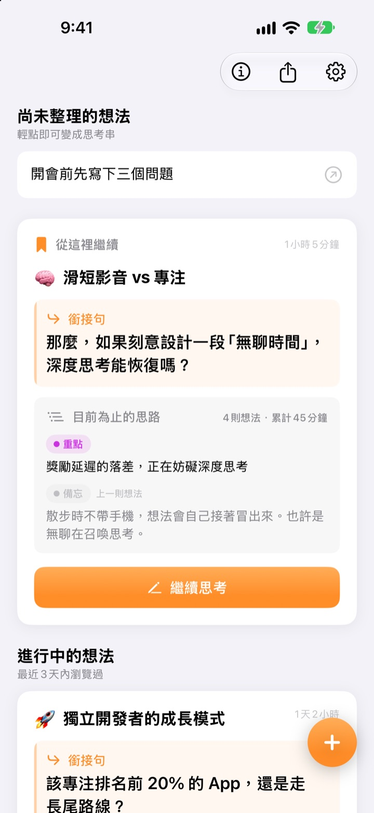
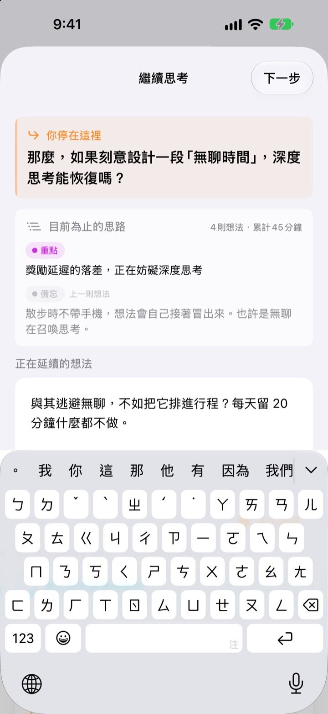
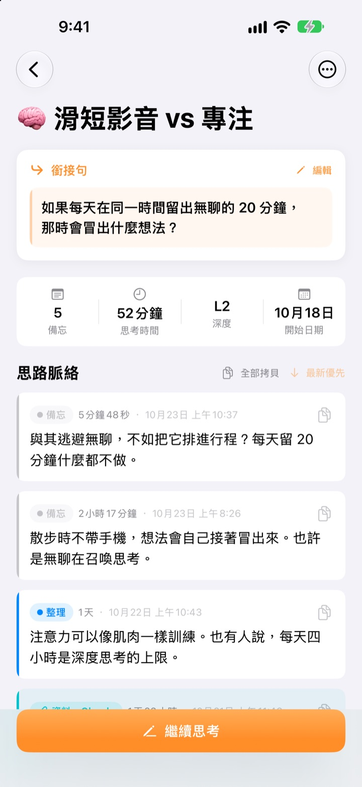
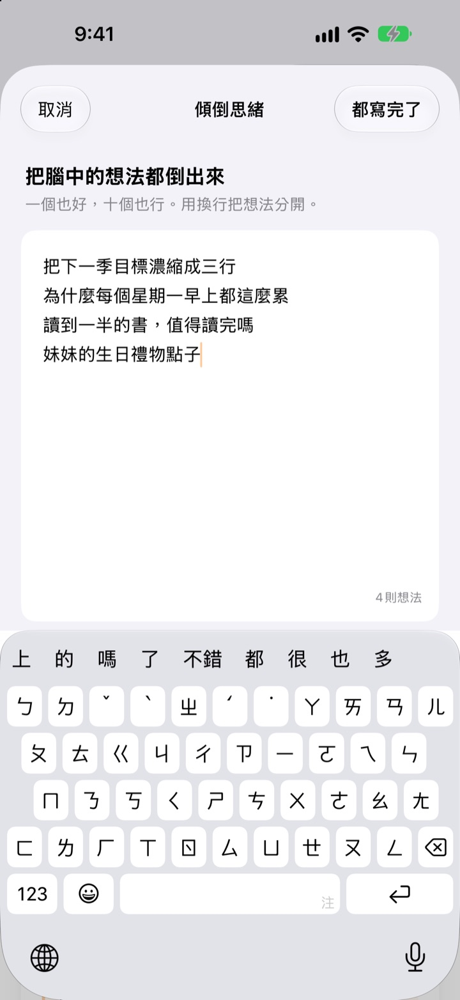

昨天沒想完的念頭，
今天從原處接著想
停下來時，留一句接下來要想的話。下次打開，這句話就在最上方等你。
所有功能免費。不需要帳號，全部只存在你的裝置上。

親手留一句銜接句
寫下一則想法，再留下下次要接著想的那句話。流程和 App 裡完全一樣。
我上次想到哪裡了？
打開幾天前的筆記，只剩幾行像結論的東西，接下來打算想什麼卻完全記不得，只好從頭再想一遍。ThinkFlow 讓你在停下時留下下一個問題，一打開就能從那個問題接著想。
銜接句在最上方等你
結束思考時，留下一句下次要接著想的問題。再次打開時，這句話、至今的重點和上一則想法都在同一張卡片上，不用再回想自己想到哪裡。
主畫面小工具也會顯示銜接句；思考期間，鎖定畫面和動態島會顯示計時。

從備忘到重點
把記下的想法依備忘、整理、重點、摘要四個階段逐步提煉，一眼就能看出想法成熟到哪一步。
搜尋或提問得到的內容作為資料附上，不會和自己的想法混在一起。

先把腦袋清空
把想到的一行一行全部寫下，再挑出現在最想深入的那一則，它就會成為一條思考串。其餘的留在首頁，輕點一下就能接著想。
超過三天沒碰的想法會歸到「待喚醒的想法」裡。

三步開始
- 1
傾倒思緒
一行一則寫下來，挑出值得深入的那一則。
- 2
接著想
每冒出一個新想法就分開新增，之後整理更輕鬆。
- 3
留下銜接句再關閉
下次打開，就從這句話開始。
整理階段
- 備忘
- 原始想法
- 整理
- 已整理一次
- 重點
- 只留重點
- 摘要
- 最終摘要
點一下想法旁的階段標籤即可更改。重點和摘要會在下次打開時優先顯示在卡片上。
銜接句在最上方等你
一定要寫銜接句嗎？
只要寫了內容，就需要。「繼續思考」畫面要留下銜接句才能關閉；什麼都沒寫的話可以直接關掉。訣竅是趁還有話可說時停下，而不是卡住了才停。
「待喚醒的想法」是什麼？
超過三天沒打開的思考串會另外歸到首頁的「待喚醒的想法」裡。差點忘掉的想法，也能從銜接句接著想下去。
想回報問題或提建議怎麼辦？
可以在 App 設定裡用「發送意見回饋」直接傳送，也可以寫信到下方信箱，或到 GitHub（github.com/M1zz/ThinkFlow/issues）留言。任何想法都歡迎。
真的全部免費嗎？
是的，所有功能都免費，沒有廣告，也不用註冊。設定裡的「支持開發者」完全自由選擇，支持與否功能都一樣。
有問題或建議，歡迎寫信到 leeo@kakao.com。